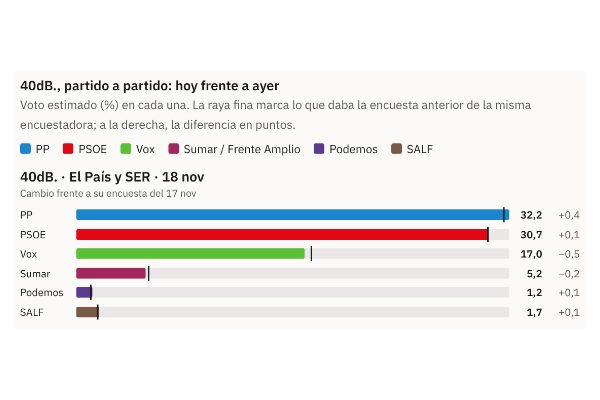

Actualidad · Las encuestas, semana a semana · España
El PSOE sube en siete de las nueve encuestas de la primera semana de campaña; el PP baja en cuatro y sube en otras cuatro
Patxi López dijo el sábado que todas las encuestas marcan el alza del PSOE y el descenso del PP. Desde el arranque de la campaña, los cambios son de décimas y ninguno supera el margen de error. El PP sigue primero en 17 de 19 encuestas y la media de nuestro modelo apenas se mueve.
Por Nacho G. del Álamo · · Actualizado el
Cada párrafo lleva una etiqueta: dato (cifra comprobable con las fuentes), patrón (relación que se repite, sin afirmar la causa), hipótesis (explicación posible, sin dos fuentes independientes) o contexto (hechos y declaraciones publicados por otros, enlazados). Cómo verificamos
ContextoEl sábado, en Zamora, el portavoz socialista en el Congreso, Patxi López, se mostró convencido de que el PSOE ganará el 29N con una lectura de las encuestas que no admitía excepciones, según la agencia EFE:
«Todas las encuestas marcan dos tendencias, el alza del Partido Socialista y el descenso del Partido Popular»
DatoAl cuarto día de campaña, la frase se cumple a medias. Diez empresas han publicado encuestas de las generales entre el viernes 13 y este lunes 16, y nueve de ellas tenían una anterior con la que compararse. En siete, el PSOE sube; en dos, Sondaxe y Winston, baja. El PP retrocede en cuatro, 40dB, Data10, NC Report y SocioMétrica; se queda igual en SW Demoscopia y mejora en las otras cuatro. Las dos tendencias a la vez, que el PSOE suba y el PP baje, solo aparecen en esas cuatro.
Ver la tabla
| Empresa (anterior) | PP | PSOE | Ventaja PP |
|---|---|---|---|
| Data10, 16 nov (9 nov) | 32,0 (−0,4) | 25,5 (+0,8) | 6,5 (7,7) |
| 40dB, 16 nov (9 nov) | 31,5 (−0,4) | 30,3 (+0,4) | 1,2 (2,0) |
| NC Report, 16 nov (9 nov) | 32,5 (−0,1) | 26,1 (+0,5) | 6,4 (7,0) |
| SocioMétrica, 15 nov (8 nov) | 31,6 (−0,4) | 27,8 (+0,1) | 3,8 (4,3) |
| SW Demoscopia, 15 nov (12 nov) | 28,4 (0,0) | 31,7 (+0,2) | −3,3 (−3,1) |
| Sigma Dos, 15 nov (12 nov) | 31,0 (+0,2) | 25,6 (+0,3) | 5,4 (5,5) |
| EM-Analytics, 15 nov (12 nov) | 30,7 (+0,5) | 26,7 (+0,5) | 4,0 (4,0) |
| Sondaxe, 16 nov (8 nov) | 30,2 (+0,5) | 26,7 (−0,6) | 3,5 (2,4) |
| Winston, 13 nov (26 oct) | 31,1 (+1,7) | 26,4 (−0,7) | 4,7 (2,3) |
DatoEl salto más grande va en dirección contraria a la que describía López: Winston para Artículo14 da al PP 1,7 puntos más que en su encuesta de finales de octubre y amplía su ventaja hasta 4,7 puntos. Sondaxe para La Voz de Galicia también la ensancha, de 2,4 a 3,5. Del otro lado, Data10 para OKDiario y NC Report para La Razón recortan la distancia, pero la dejan por encima de los seis puntos. Varias de estas encuestas se publican ya en campaña con entrevistas anteriores: Winston terminó su trabajo de campo el 8 de noviembre y NC Report lo hizo entre el 6 y el 12, antes del arranque. La distancia más corta entre las encuestas de esta semana que dan ganador al PP es la del tracking de 40dB para El País y la SER: 1,2 puntos, con el PSOE en el 30,3 %.
Data10 · Okdiario · 16 nov
Cambio frente a su encuesta del 9 nov
40dB · El País / Cadena SER · 16 nov
Cambio frente a su encuesta del 9 nov
NC Report · La Razón · 16 nov
Cambio frente a su encuesta del 9 nov
SocioMétrica · El Español · 15 nov
Cambio frente a su encuesta del 8 nov
SW Demoscopia · La Séptima · 15 nov
Cambio frente a su encuesta del 12 nov
Sigma Dos · El Mundo · 15 nov
Cambio frente a su encuesta del 12 nov
EM-Analytics · Electomanía · 15 nov
Cambio frente a su encuesta del 12 nov
Sondaxe · La Voz de Galicia · 16 nov
Cambio frente a su encuesta del 8 nov
Winston · Artículo14 · 13 nov
Cambio frente a su encuesta del 26 oct
Décimas dentro del margen
DatoNingún cambio llega a dos puntos: el mayor, el del PP en Winston, se queda en 1,7. Y ninguno supera el margen de error en las cinco comparaciones en que las dos encuestas no comparten ni un día de trabajo de campo. Entre dos muestras distintas, el cambio de un partido necesita superar el error de las dos juntas para ser algo más que ruido: con las 1.200 y 1.501 entrevistas de Winston, ese margen es de ±3,6 puntos para el PP; con las 1.000 y 1.000 de NC Report, de ±3,9 para el PSOE, que sube 0,5, y con las 1.500 y 1.500 de Data10, de ±3,2 para un PSOE que gana 0,8.
DatoLa campaña ha traído, sobre todo, encuestas diarias. Cuatro empresas publican un tracking casi cada mañana: 40dB, Sigma Dos, SW Demoscopia y EM-Analytics; Sondaxe se ha sumado este fin de semana. Desde su primera entrega de campaña, la ventaja del PP se estrecha en 40dB, de 2,1 a 1,2 puntos, y apenas varía en Sigma Dos, de 5,6 a 5,4, y en EM-Analytics, de 4,3 a 4,0. SW Demoscopia es la única que pone por delante al PSOE: su ventaja pasa de 3,1 a 3,3 puntos.
40dB · El País / Cadena SER
Sigma Dos · El Mundo
SW Demoscopia · La Séptima
EM-Analytics · Electomanía
Ver la tabla
| Tracking | Publicada | PP | PSOE | Vox |
|---|---|---|---|---|
| 40dB | 13 nov | 31,5 | 29,4 | 18,8 |
| 40dB | 14 nov | 31,1 | 29,8 | 18,5 |
| 40dB | 15 nov | 31,4 | 29,9 | 18,3 |
| 40dB | 16 nov | 31,5 | 30,3 | 18,0 |
| Sigma Dos | 12 nov | 30,8 | 25,3 | 19,6 |
| Sigma Dos | 13 nov | 31,0 | 25,4 | 19,7 |
| Sigma Dos | 15 nov | 31,0 | 25,6 | 19,7 |
| SW Demoscopia | 9 nov | 28,3 | 31,1 | 17,3 |
| SW Demoscopia | 10 nov | 28,3 | 31,2 | 17,5 |
| SW Demoscopia | 11 nov | 28,1 | 31,4 | 17,5 |
| SW Demoscopia | 12 nov | 28,4 | 31,5 | 17,2 |
| SW Demoscopia | 13 nov | 28,5 | 31,6 | 17,1 |
| SW Demoscopia | 14 nov | 28,3 | 31,7 | 17,1 |
| SW Demoscopia | 15 nov | 28,4 | 31,7 | 16,9 |
| EM-Analytics | 9 nov | 30,5 | 25,9 | 19,0 |
| EM-Analytics | 12 nov | 30,2 | 26,2 | 19,2 |
| EM-Analytics | 13 nov | 30,4 | 26,1 | 19,0 |
| EM-Analytics | 14 nov | 30,6 | 26,5 | 18,8 |
| EM-Analytics | 15 nov | 30,7 | 26,7 | 19,0 |
HipótesisLas cuatro líneas dibujan cuatro campañas distintas: la distancia entre el PP y el PSOE va de los 5,4 puntos de Sigma Dos a los 3,3 a favor del PSOE de SW Demoscopia. Esa diferencia entre empresas, de 8,7 puntos, pesa mucho más que cualquier movimiento de una sola de ellas en estos cuatro días.
Lo que no cambia: el PP primero y la mayoría con Vox
DatoCon la última encuesta de cada empresa de los últimos 30 días, como cuenta la página de encuestas, el PP es el más votado en 17 de 19; el jueves, antes de la campaña, lo era en 16 de 18. Solo el CIS y SW Demoscopia ponen por delante al PSOE. Y de las 18 que publican escaños, 16 dan a PP y Vox juntos 176 o más, la mayoría absoluta; el jueves eran 14 de 16. Las dos que no, otra vez, el CIS y SW Demoscopia.
DatoLa media que usa nuestro modelo se ha movido todavía menos. Al empezar la campaña, en la publicación de las 00.38 del viernes 13, daba al PP el 30,7 % y al PSOE el 27,5 %; este lunes, a las 08.13, el 30,9 % y el 27,7 %. La distancia sigue algo por encima de los tres puntos. En escaños, el escenario central da a PP y Vox 194, uno más que el viernes (127 y 67, frente a 126 y 67). En el 93 % de las simulaciones llegan a 176; el viernes, en el 92 %.
Ver la tabla
| Partido | 13 nov | 16 nov | Cambio |
|---|---|---|---|
| PP | 30,7 | 30,9 | +0,1 |
| PSOE | 27,5 | 27,7 | +0,2 |
| Vox | 18,9 | 18,8 | −0,1 |
| Sumar / Frente Amplio | 6,8 | 6,5 | −0,3 |
ContextoAlberto Núñez Feijóo leyó el marcador en clave de fútbol el domingo, después de ver a la selección en el Metropolitano. En El Partidazo de COPE dijo que el PP va ganando «claramente», pero pidió no relajarse, según Europa Press:
«Queda lo más importante, que son los últimos días de liga donde te juegas todo»
Lo que estas encuestas no dicen
ContextoComparar una encuesta con la anterior de la misma empresa evita mezclar métodos distintos, pero no borra el error de muestreo. Los márgenes de esta pieza suponen muestreo aleatorio simple, como las fichas técnicas, y solo se calculan cuando las dos encuestas comparadas tienen muestras distintas: los trackings suman entrevistas de varios días y una entrega comparte buena parte de ellas con la del día anterior. La encuesta de YouGov para el Ara, publicada el sábado con trabajo de campo hasta el 2 de noviembre, no tiene otra anterior en la tabla y queda fuera de la comparación. La ley prohíbe publicar encuestas desde el martes 24 de noviembre.
Preguntas frecuentes
¿Sube el PSOE en las encuestas de la campaña del 29N?
En siete de las nueve empresas que han publicado una encuesta entre el 13 y el 16 de noviembre y tenían una anterior, sí, entre 0,1 y 0,8 puntos. En Sondaxe y Winston baja. El PP baja en cuatro: 40dB, Data10, NC Report y SocioMétrica.
¿Cuántas encuestas dan mayoría absoluta a PP y Vox?
16 de las 18 que publican escaños, con la última de cada empresa de los últimos 30 días a 16 de noviembre de 2026. No la dan el CIS ni SW Demoscopia.
¿Qué dice la media de las encuestas al empezar la campaña?
La media del modelo de Mapa Electoral da al PP el 30,9 %, al PSOE el 27,7 % y a Vox el 18,8 % el 16 de noviembre, frente al 30,7, el 27,5 y el 18,9 % del 13.
La encuesta de El País del 9 de noviembre · El CIS preelectoral · A dos semanas del 29N · Todas las encuestas del 29N
Método y fuentes
- Qué se compara
- La última encuesta de cada empresa publicada entre el 13 y el 16 de noviembre de 2026 frente a la última de la misma empresa publicada antes del 13; los cuatro trackings diarios del 9 al 16 de noviembre; el recuento de encuestas de /encuestas/ y la media del modelo al empezar la campaña y este lunes.
- Límites
- Comparar una encuesta con la anterior de la misma empresa no elimina el error de muestreo. Los márgenes suponen muestreo aleatorio simple y solo se calculan cuando las dos encuestas comparadas no comparten días de trabajo de campo; los trackings acumulan entrevistas de varios días. Winston y NC Report terminaron su trabajo de campo antes de la campaña, el 8 y el 12 de noviembre, y la de YouGov, sin otra anterior, queda fuera de la comparación. Las recopilaciones de Electográfica y Wikipedia pueden no estar completas.
- Cómo se calcula
- Cambio: estimación de voto de cada partido en la encuesta de campaña menos la de la encuesta anterior de la misma empresa, en puntos. Margen del cambio: dos veces la raíz de p₁ (1 − p₁) / n₁ + p₂ (1 − p₂) / n₂, con p el porcentaje de un partido y n las entrevistas de cada encuesta. Recuento: última encuesta de cada empresa con trabajo de campo terminado en los últimos 30 días; con una horquilla de escaños, se cuenta el extremo bajo. Modelo: publicaciones de las 00.38 del 13 de noviembre y de las 08.13 del 16. Script: actualidad/src/resumenes/semana_campana.py. Cifras reproducibles con los scripts del expediente de la pieza. Metodología de Actualidad · Metodología del Atlas
- Fuentes
- EFE vía Infobae, Patxi López en Zamora (14-11-2026)
- Europa Press vía Infobae, Feijóo en El Partidazo de COPE (15-11-2026)
- NC Report para La Razón (16-11-2026)
- Data10 para OKDiario (16-11-2026)
- Sondaxe para La Voz de Galicia (16-11-2026)
- Electográfica, tracking de 40dB para El País y la SER (16-11-2026)
- Electográfica, encuestas de las generales de 2026
- Wikipedia, Opinion polling for the 2026 Spanish general election
- Mapa Electoral, encuestas de las generales y modelo (13 y 16-11-2026)
- Mapa Electoral, método del modelo de escaños
- Autoría
- Nacho G. del Álamo
- Revisión de datos y texto
- Nacho G. del Álamo, 16 de noviembre de 2026
- Publicado · actualizado
- 16 de noviembre de 2026 · 16 de noviembre de 2026, a las 09.00
- Correcciones
- Ninguna.
Serie «Camino al 29N»: 162 piezas
- El CIS preelectoral da al PSOE 7,8 puntos de ventaja; la media de las demás encuestas, 3,6 al PP
- El mapa electoral de Cantabria: sin el PRC en la papeleta, el PP pasó de 55 a 85 municipios y ganó El Astillero por 5 votos
- El mapa electoral de La Rioja: el PP pasó de 108 a 138 municipios y ganó Logroño por 6.822 votos; con las encuestas, Vox le quitaría un diputado al PSOE
- El mapa electoral de Ceuta y Melilla: Vox pasó de ganar 32 secciones de Ceuta a ninguna, y 13 de las 17 de Coalición por Melilla fueron al PSOE
- Los once municipios que visitan los candidatos el primer día de campaña, fuera de Madrid y Barcelona, cambiaron de ganador entre 2019 y 2023
- Dos de los cuatro del debate de laSexta no se presentan el 29N: ni Cuerpo ni Bustinduy están en ninguna lista
- El CIS da al PSOE más escaños que la media de encuestas en 13 provincias y menos en ninguna; en Madrid, entre 12 y 14 frente a 10
- A dos semanas del 29N, 14 de las 16 encuestas con escaños dan mayoría absoluta a PP y Vox; solo el CIS y SW Demoscopia ponen por delante al PSOE
- De los 25 convocados de De la Fuente nacidos en España, 15 nacieron donde ganó el PSOE en 2023 y 8 donde ganó el PP; en Puente Genil, el PP ganó por 31 votos
- Vox, primero en el CIS entre los de 18 a 24 años: la generación de 2008 estrena voto en unas generales
- Estás aquíEl PSOE sube en siete de las nueve encuestas de la primera semana de campaña; el PP baja en cuatro y sube en otras cuatro
- Feijóo hace campaña con UPN en Pamplona, donde el PSOE ganó 77 de las 151 secciones en 2023; con UPN y PP sumados, se habría quedado en 49
- Al PP le faltaron 9.793 votos en 2023 para recuperar un diputado en Gipuzkoa; Feijóo arropa hoy a su candidato, atacado en Hernani
- En 2023, las últimas encuestas daban al PP 5,7 puntos de ventaja sobre el PSOE y ganó por 1,4: si hoy fallaran igual, el PSOE iría primero
- Si la abstención fuera un partido, en 2023 habría quedado por delante del ganador en más de la mitad de las grandes ciudades y en la mitad de las secciones de España
- Voto por correo para las elecciones generales del 29N: el plazo para pedirlo acaba el jueves 19; en 2023, una de cada tres solicitudes llegó en las dos últimas semanas
- Encuestas y debate: tras el cara a cara de 2023, 10 de 14 encuestadoras ampliaron la ventaja del PP; trece días después ganó por 1,4 puntos
- Elecciones generales: una de cada tres secciones cambió de ganador entre 2019 y 2023
- Elecciones generales: las encuestas dan al PSOE entre el 25,5 y el 33,3 %
- Elecciones generales: Vox baja al 17 % en la encuesta diaria de El País
- Ver las 162 piezas de la serie
Más datos: elecciones generales del 29N de 2026: fecha y escaños por provincia · resultados de las elecciones generales 2026 (29N) y los de 2023 · dónde y cómo votar el 29N: colegio electoral, voto por correo y plazos.
Sigue leyendo
 El debateDebate Sánchez Feijóo: hora, dónde verlo y quién gana el cara a cara
El debateDebate Sánchez Feijóo: hora, dónde verlo y quién gana el cara a cara Encuestas de hoyEncuestas elecciones generales 2026, hoy 19 de noviembre: Sondaxe deja al PSOE a 0,7 puntos del PP
Encuestas de hoyEncuestas elecciones generales 2026, hoy 19 de noviembre: Sondaxe deja al PSOE a 0,7 puntos del PP Encuestas de hoyEncuestas elecciones generales 2026, hoy 18 de noviembre: el PSOE, a dos puntos o menos del PP
Encuestas de hoyEncuestas elecciones generales 2026, hoy 18 de noviembre: el PSOE, a dos puntos o menos del PP
La encuesta de El PaísElecciones generales: Vox baja al 17 % en la encuesta diaria de El País Lo que las encuestas no dicenElecciones generales: las encuestas dan al PSOE entre el 25,5 y el 33,3 %
Lo que las encuestas no dicenElecciones generales: las encuestas dan al PSOE entre el 25,5 y el 33,3 % El mapa que nadie te enseñaElecciones generales: una de cada tres secciones cambió de ganador entre 2019 y 2023
El mapa que nadie te enseñaElecciones generales: una de cada tres secciones cambió de ganador entre 2019 y 2023